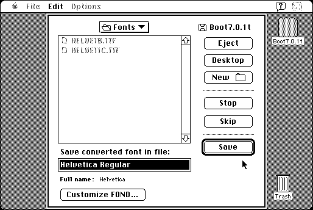

Download
tt-converter-15.zip (41K) TTConverter 1.5 repackaged into a zipped hfs disk image and checksum file. The disk image can be mounted with Mini vMac.
tt-converter-15.hqx (53K) TTConverter 1.5 in the original format.
copyright: Chris Reed
mod date: Jul 5, 1993
license: shareware
from url :
chris reed
Converts TrueType fonts between Macintosh and Windows formats.
Warning: when converting from Windows to Macintosh format, the “Customize FOND” button leads to a dialog that doesn't fit on the 512x342 screen size of a Macintosh Plus, and there is no way to leave the dialog. (Mini vMac can be compiled to emulate a modified Macintosh Plus with a larger screen.)

If you find these downloads useful, please consider helping the Gryphel Project, which hosts them.
Here are the md5 checksums for the downloads, signed with Gryphel Key 5:
--------- GRY SIGNED TEXT --------- b5d7e1af2f3e4d9f77790e387fe4afcd tt-converter-15.zip f470b8070de00ebb1504ecc0e5adab40 tt-converter-15.hqx ------- BEGIN GRY SIGNATURE ------- Gry/4Xa8CFcUzxdN/Aqfy783ofEEs1fM59qmFAw71qpg4LaM6AapEHzIJiUITeDm Fm5fad/blCmpckcCQBZi8L9Nb0KpKrucbXKvIrZIHnYlZ/TroWPGJ5BzCFXD3u3x cHWT3fbcMXdRb3iIvYoI72c4TUho8Cn/UF6+EhVzrbVrpB4F/W9bsldwAY+XOBGJ -------- END GRY SIGNATURE --------